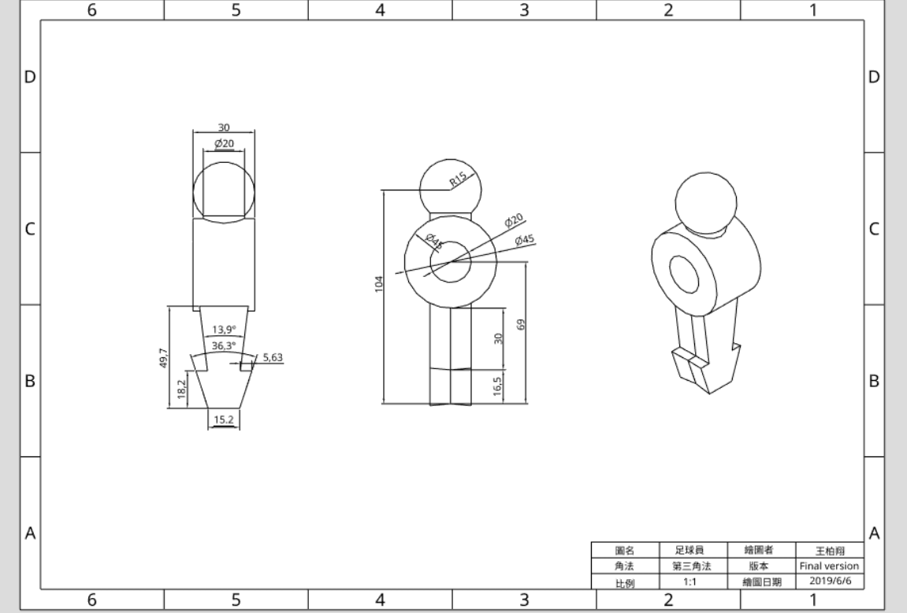
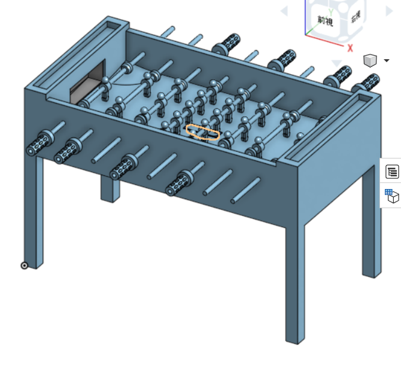

產品協同設計第三組
Home
Site Map
reveal
blog
執行規劃
手足球系統模擬
設計與繪圖
零組件尺寸分析
參數設計與繪圖
w11進度
W12進度
W13進度
W14進度
W15進度
細部設計與 BOM
V-rep 動態模擬
V-rep簡化與模擬測試
簡化與模擬測試問題與討論
送球機構設計與模擬
送球機構每周進度
送球機構問題與討論
系統功能展示
Ag3-足球台模擬進度
第十二週-影像辨識尋找球和桿子位置
第十三週-影像辨識機器對打
第十四週-影像辨識機器對打修正十三週錯誤
第十四週-更改影像辨識方式
第十五週-影像辨識多個球員踢球
系統功能問題與討論
結案報告
專案口頭簡報
專案報告書
如何開始編輯報告書
編輯報告書須知
第十週
組員
手足球
足球自動回擊
手足球雙人對打
手足球電腦對電腦
手足球手控與電腦對打
手足球問題與解決方案
參考資料
如何使用Python Remote API
課程內容整理
隨身系統
Git - ungit
ssh金鑰
git
V-rep
Onshape
問題與討論
ungit
ShareX
組員操作影片
如何製作可攜系統
v-rep tutorial
配置虛擬主機
Git教材
伺服器上的Git
分散式的Git
Fork
ungit 手冊
part1
part2
V-rep <<
Previous
Next
>> 問題與討論
Onshape
手足球製作
足球員

場地
手把
組合圖

40623118：製作手把與進行組合圖組裝
40623141：製作手足球員與場地
組合圖連結
V-rep <<
Previous
Next
>> 問題與討論